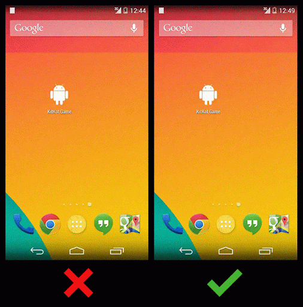

如何让Android应用启动的体验更顺畅
2014-05-29 20:34:00 by suphy如何让Android应用启动的体验更顺畅
Android 中应用启动的时候，首先会加载一个预览窗口（由Activity 的主题决定的）用于对用户操作的即时响应。一旦真正的内容加载完毕，预览窗口将淡出，内容窗口相应淡入。
Android应用window预览效果是打开的，可以通过android:windowDisablePreview = true来禁止window预览效果。
为了避免出现白色或黑色界面，可以通过修改activity的theme使启动过程更流畅。
The perfect preview window
如果你的Activity没有ActionBar，那就在Activity 的主题里面禁用掉ActionBar，这样在预览窗口中就不会出现ActionBar了。
另外，因为默认的预览窗口是纯黑色的，如果你的Activity 背景是其他颜色，那么为了启动连贯顺畅，可以通过覆写window的背景颜色实现。如下:
-
自定义主题，修改windowBackground
<style name="Theme.Calculator" parent=“@android:style/Theme.Holo.NoActionBar"> <item name="android:windowBackground”>@android:color/black</item> </style>
-
Activity最外层的View不要设置android:background属性
<LinearLayout xmlns:android="http://schemas.android.com/apk/res/android"
android:orientation="vertical"
android:layout_width="match_parent"
android:layout_height="match_parent"
android:background="#ff000000">
<!-- -->
</LinearLayout>
如果需要有ActionBar，则可以通过调整ActionBar的显示选项（displayOptions）比如显示和隐藏标题或者logo，来实现更顺滑的应用启动效果。 参考该文档和API指南
注意，不要使用这个功能去实现Splash屏幕，这个的目的是为用户提供更流畅的应用体验，提供更和谐的转场效果。
更多信息，查看Cyril Mottier的这篇文章
